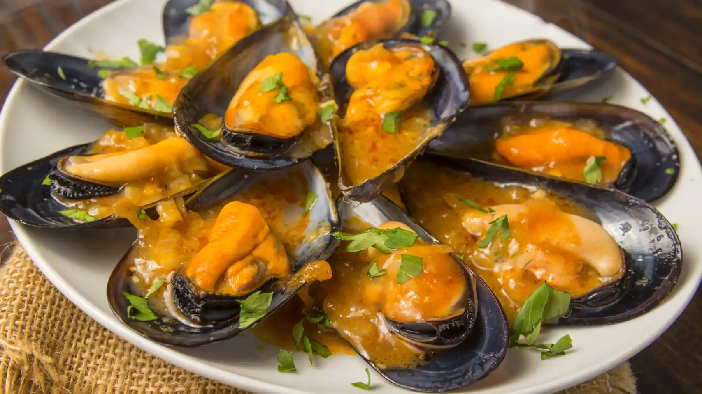

Mejillones
Receta de mejillones caseros.

Elaboración (pasos)
- una vez que tenemos los mejillones limpios procederemos a su cocción.
- añadir agua en una cazuela.
- agregamos los mejillones y una hoja de laurel.
- con todos los ingredientes en la cazuela la tapamos y encendemos el fuego.
- pasaran unos 7-8 minutos hasta que esten listos.
- apagamos el fuego una vez que esten listos.
- servir los mejillones bien calientes.
Para volver pincha aquí.